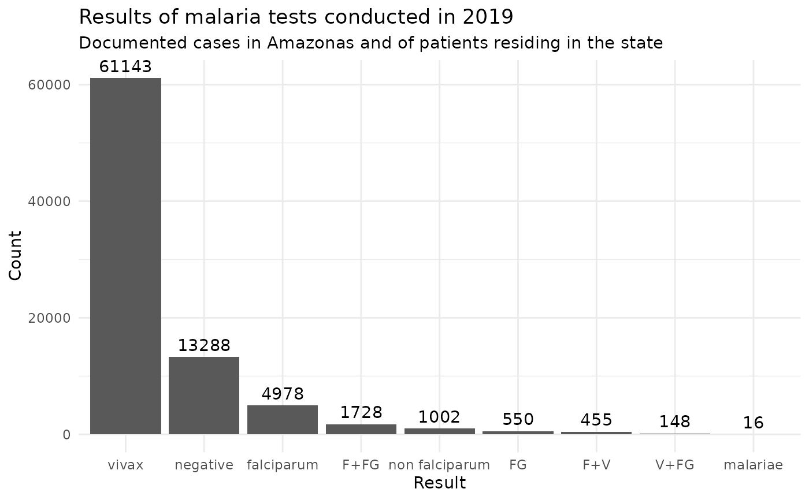

malaria_amazonas - An integrated dataset of malaria notifications in the state of Amazonas
malaria_amazonas.RdThis dataset contains medical records of patients who underwent malaria screening tests in the Legal Amazon. The data in this dataset were filtered to include only the cases reported in the state of Amazonas and for patients who reside specifically in the state of Amazonas between 2014 and 2019.
Format
`malaria_amazonas' A data frame with 551633 rows and 35 columns:
- notification_hr
Health region of notification
- notification_county
County of notification
- infection_state
Probable state where the patient was infected
- infection_hr
Probable health region where the patient was infected
- infection_county
Probable county where the patient was infected
- home_hr
Health region of residence of the patient
- home_county
County of residence of the patient
- exam_interval
Time interval between notification and examination
- treatment_interval
Time interval between examination and beginning of treatment
- notification_interval
Time interval between symptom and notification
- notification_month
Month in which the notification was recorded
- notification_year
Year in which the notification was recorded
- symptom_month
Month in which the patient felt the first symptoms of malaria
- symptom_year
Year in which the patient felt the first symptoms of malaria
- exam_month
Month in which the examination was performed
- exam_year
Year in which the examination was performed
- treatment_month
Month in which the treatment started
- treatment_year
Year in which the treatment started
- migration
Health region of residence different than that of notification
- exam_result
Result of examination
- detection_type
Type of detection
- exam_type
Type of examination
- symptom
Indicates if the patient felt a symptom
- hemiparasite
The result of the examination for other hemiparasites
- previous_treatment
Previous treatment for P. vivax or P.falciparum
- occupation
Main activity in the last 15 days
- education_level
Level of education of the patient
- age
Interval of the age of the patient
- race
Race/color of the patient
- gender
Gender of the patient
- pregnancy
Indicates pregnancy and the gestational age
- crosses
Indicates the amount of parasitemia in crosses
- cvl_case
Indicates the existence of cases of canine visceral leishmaniasis
- scheme
Indicates the treatment scheme employed
- qty_parasites
Indicates the number of parasites per mm^3
Examples
# \donttest{
# Bar plot of malaria tests results (2019)
library(dplyr)
library(ggplot2)
malaria_amazonas %>%
filter(exam_year == 2019) %>%
count(exam_result) %>%
ggplot(aes(x = reorder(exam_result, -n), y = n)) +
geom_bar(stat = "identity") +
geom_text(
aes(label = n),
vjust = -0.5
) +
theme_minimal() +
labs(
title = "Results of malaria tests conducted in 2019",
subtitle = "Documented cases in Amazonas and of patients residing in the state",
x = "Result",
y = "Count"
)

# }